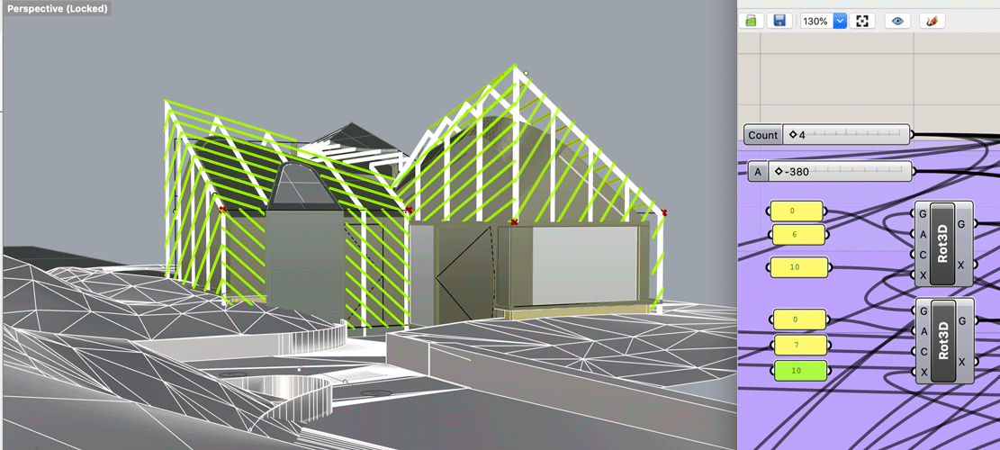
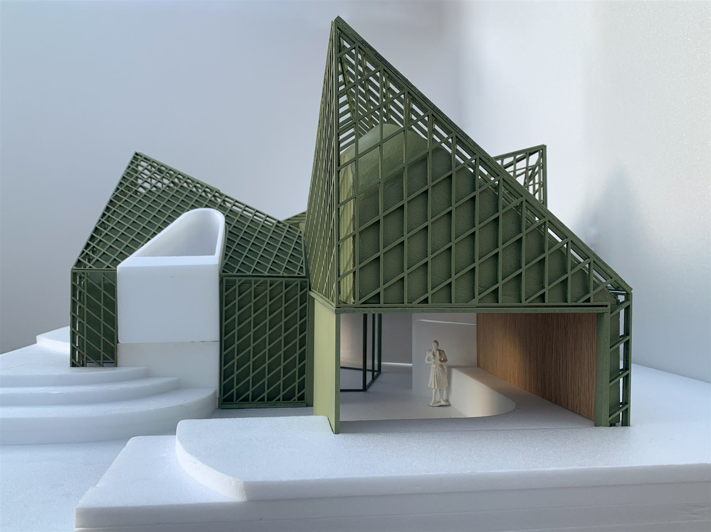
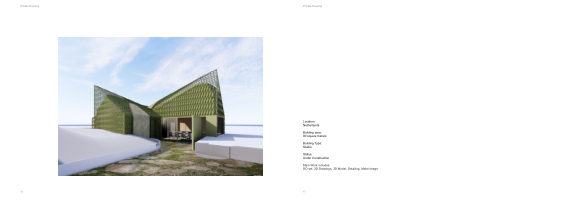
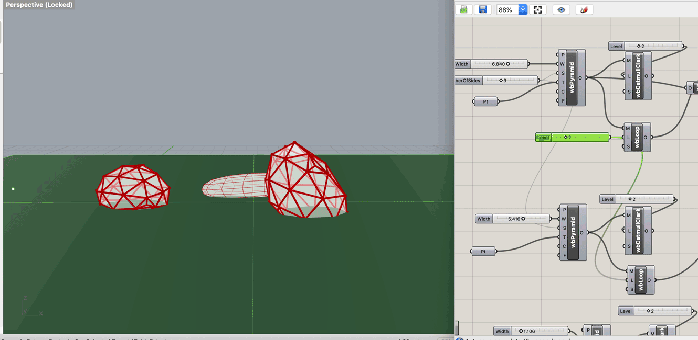
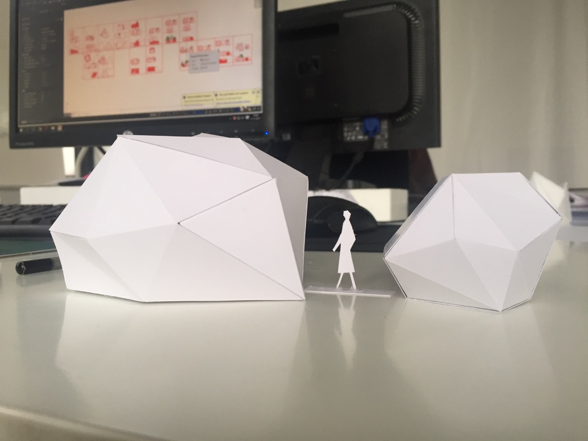
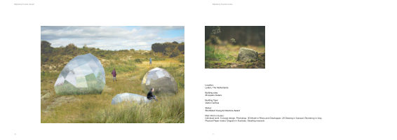

Portfolio · Selected Works
Wen Bao
Architecture & Computational Design
01 — Parametric process

02 — Physical model

Project 01

PDF View project sheets ↗01 — Parametric process

02 — Physical model

Project 02

PDF View project sheets ↗